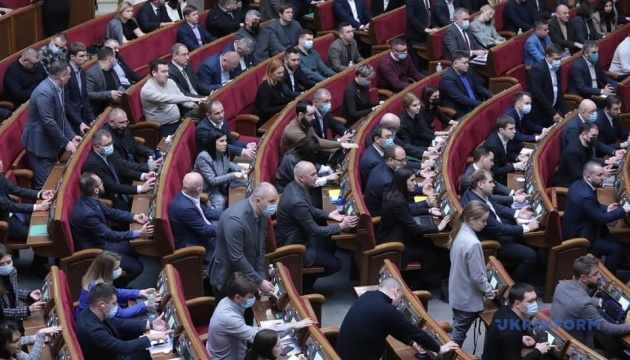
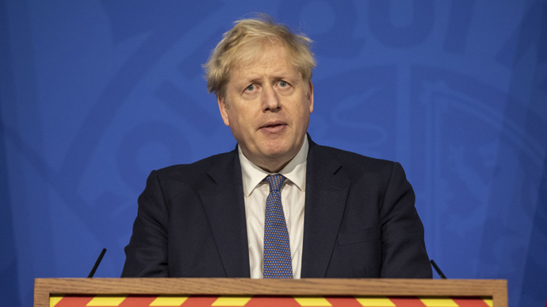
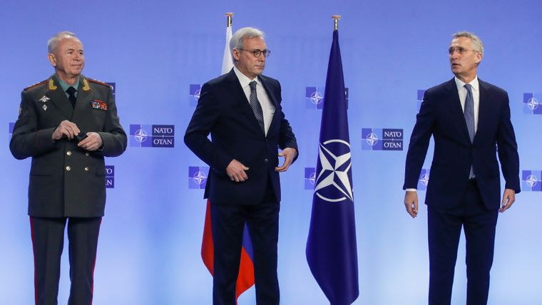
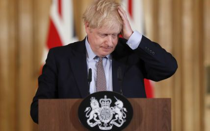

ВР звернулася до міжнародних організацій через військовий шантаж Росії
Верховна Рада звернулася до ООН, Європарламенту, урядів та парламентів іноземних держав, а також парламентських асамблей міжнародних організацій щодо неприйнятності військового шантажу з боку Росії, який вона здійснює для недопущення реалізації європейських та євроатлантичних прагнень України.
Як повідомляє кореспондент Укрінформу, відповідну постанову №6543 підтримали 282 народні депутати.
Чого вимагають депутати
Так, народні депутати закликають визнати, що вимоги РФ до міжнародних партнерів щодо недопущення реалізації європейських та євроатлантичних прагнень України є порушенням, зокрема, Конституції та законодавства України, основних принципів та норм міжнародного права, Статуту Організації Об’єднаних Націй, Заключного акта Наради з безпеки та співробітництва в Європі (Гельсінський заключний акт, 1 серпня 1975 року).
Підсумкового документа Наради з безпеки та співробітництва в Європі (Паризька хартія для нової Європи, 21 листопада 1990 року), Меморандуму про гарантії безпеки у зв’язку з приєднанням України до Договору про нерозповсюдження ядерної зброї (Будапештський меморандум, 5 грудня 1994 року), Резолюції Генеральної Асамблеї ООН "Територіальна цілісність України" № 68/262 (27 березня 2014 року), Міжнародної конвенції про боротьбу з фінансуванням тероризму (9 грудня 1999 року).
"Запропоновані проєктом постанови заходи сприятимуть консолідації міжнародних правових зусиль з метою недопущення розширення агресивних дій Російської Федерації проти України і всієї Центрально-Східної Європи", – заявив Стефанчук під час доповіді документа з трибуни парламенту.
Джерело: Укрінформ
Прем'єр Британії вірить у наступ РФ на Київ попри відмову більшості посольств евакуюватися
Прем'єр-міністр Великої Британії Борис Джонсон вважає, що Росія має план блискавичної війни на території України.
Про це пише BBC, повідомляє "Європейська правда".
Вторгненню бути?
"Розвідка дуже чітко вказує на те, що на кордонах України є 60 російських бойових груп, план блискавичної війни, яка може захопити Київ, це те, що можуть побачити усі. Ми повинні чітко дати зрозуміти Кремлю, Росії, що це буде катастрофічний крок", – сказав Джонсон.
Прем'єр додав, що ситуація "досить похмура", але війна не є неминучою. За його словами, Британія "очолює створення пакета економічних санкцій" проти Росії і постачає Україні оборонну зброю.
У понеділок лідери США та Європи узгодили спільний план дій на випадок вторгнення Росії в Україну. Президент США Джо Байден провів відеоконференцію з лідерами ЄС, генеральним секретарем НАТО та Джонсоном.
Джерело: Українська правда
Загроза військового конфлікту залишається. Підсумки перемовин «НАТО — Росія»
Тиждень перемовин із Росією про безпеку продовжився зустріччю з країнами НАТО. Вона відбулася у середу, 12 січня, у Брюсселі. Питання України знову стало одним із ключових. Що обговорювали та які підсумки цих перемовин — у матеріалі hromadske.
Що відбулося?
Перемовини в форматі «НАТО — Росія» відбулися вперше з липня 2019-го. Відтоді відносини сторін значно погіршилися. Кремль закрив своє представництво при Альянсі та інформбюро НАТО в Росії. Натомість НАТО зменшило місію росіян при Альянсі до 10 людей. Тож ця зустріч могла стати кроком до відновлення співпраці.
На засіданні ради НАТО з Росією головував генсек Альянсу Єнс Столтенберг. Росію представляв заступник міністра закордонних справ Олександр Грушко та заступник глави міноборони Олександр Фомін. Американську сторону — заступниця держсекретаря Венді Шерман. Також були представники всіх країн-членів НАТО.
Дискусія тривала близько чотирьох годин. Значну частину розмови присвятили Україні.
«Позитивною ознакою є те, що всі країни-члени НАТО та Росія сіли за один стіл для обговорення предметної тематики після двох років, коли цю зустріч неможливо було скликати», — підсумував Столтенберг.
Джерело: Громадське
Готівковий долар подорожчав на 44 копійки та досяг 29 грн
У вівторок, 25 січня, середній курс купівлі готівкового долара в українських банках, у порівнянні з понеділком, зріс на 31,15 коп. та складає 28,4955 грн. Курс продажу зріс на 44 коп. та становить 28,8695 грн.
Деталі
Мінімальний курс купівлі долара у банках становив 28,3 грн, максимальний – 28,65 грн. Для продажу мінімальний курс – 28,7 грн, максимальний – 29,05 грн.
Середній курс купівлі євро зріс на 28,52 коп. та становить 32,0985 грн. Середній курс продажу зріс на 40,22 коп. та становить 32,6555 грн. Мінімальний курс покупки для євро становив 31,9 грн, максимальний – 32,23 грн. Для продажу мінімальний курс – 32,44 грн, максимальний – 32,9 грн.
Середній курс купівлі 10 російських рублів упав на 2,9 коп. та становить 3,257 грн. Середній курс продажу знизився на 1,7 коп. – до 3751 грн. Мінімальний курс готівкової покупки, пропонований банками, – 2 грн за 10 російських рублів, максимальний – 3,55 грн. Для продажу мінімальний курс – 3,65 грн, максимальний – 3,9 грн.
Середній курс купівлі 10 російських рублів упав на 2,9 коп. та становить 3,257 грн. Середній курс продажу знизився на 1,7 коп. – до 3751 грн.
Джерело: Liga
"План блискавичної війни": Джонсон не виключає наступ Росії на Київ
Лондон підтримує український народ, наголосив прем'єр Британії.
Що сказав Джонсон
Британський прем'єр Борис Джонсон не виключає, що вторгнення Росії до України може початися з наступу на Київ.
Таку думку він висловив BBC.
За словами Джонсона, Москва підготувала план блискавичної війни.
"Розвідка дуже чітко вказує, що на кордонах України перебуває 60 російських бойових груп. План блискавичної війни, яка може знищити Київ, очевидний для всіх. Ми повинні чітко дати зрозуміти Кремлю, Росії, що це буде катастрофічним кроком", - заявив він.
Джерело: ТСН